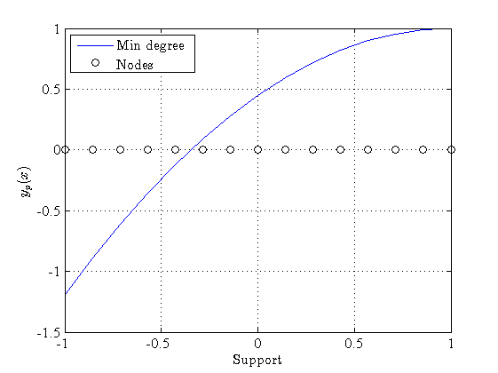
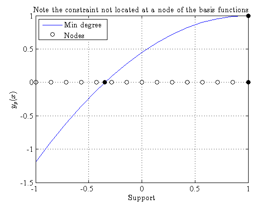
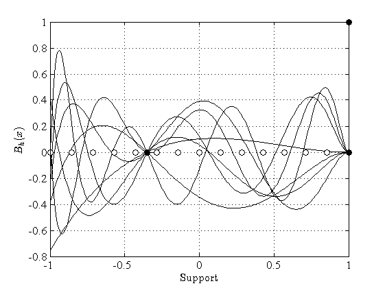

Demo3: Constraints Placed Not at Nodes
The function dopGenConstrained has the possability of placing constraints at points which are nodes in the basis functions, i.e. at points where the polynomials are nor evaluated. This can be a hlepfull procedure in solving boundary value problems which may otherwise be singular at a point.
(c) 2013 Paul O'Leary and Matthew Harker Institute for Automation University of Leoben A-8700 Leoben Austria
URL: automation.unileoben.ac.at Email: office@harkeroleary.org
Contents
close all; clear all; % % Set some defaults % FontSize = 12; set(0,'DefaultaxesFontName','Times'); set(0,'DefaultaxesFontSize',FontSize); set(0,'DefaulttextFontName','Times'); set(0,'DefaulttextFontSize',FontSize); set(0,'DefaultfigurePaperType','A4'); set(0,'DefaultTextInterpreter', 'latex');
Define the Number of Basis Functions and x
nrBfs = 10; % % Generate the vector of x values % nrPts = 15; x = dopNodes( nrPts, 'Gramends');
Definig the Triplets for the Constraints
t1 = [0,1,1]; t2 = [1,1,0]; t3 = [0,-0.35,0]; % % Concatinate the triplets to form an array of triplest which define all % the constraints. % T = [t1; t2; t3];
Call dopGenConstrained
The function dopGenConstrained computes a particular solution y_p and determine a set of basis functions Bh suche that the homogeneous solution y_h = Bh * \beta. In this manner the possible solutions to y are of the form: y = y_p + y_h = y_p + Bh * \beta.
[yp, Bh, S] = dopGenConstrained( x, nrBfs, T );
Display Prticular Solutions
Here the minimum degree and minimum norm psrticular solutions are displayed.
fig1 = figure; plot(x, yp, 'b'); hold on; xlabel( 'Support' ); ylabel( '$$y_p(x)$$' ); grid on; plot( x, zeros( size(x)), 'ko', 'MarkerFaceColor', 'w'); legend( 'Min degree', 'Nodes', 'Location', 'NorthWest');
[nt, mt] = size( T ); for k = 1:nt if T(k,1) == 0 plot( T(k,2), T(k,3), 'ko', 'MarkerFaceColor', 'k'); else plot( T(k,2), 0, 'ko', 'MarkerFaceColor', 'k'); end; end; % title( 'Note the constraint not located at a node of the basis functions'); %
Display the Homogeneously Constrained Basis Functions
The basis functions are interpolated to show them more smoothly
Extract the recurrence coefficients from the structure S
rC = S.rC;
Interpolate the basis functions
This figure shows the homogeneously constrained basis functions and the nodes at which the basis functions were computed prior to interpolation. Note the constraints are located at points which do not correspond to nodes.
noInt = 200; xi = linspace( x(1), x(end), noInt )'; [~, Bi] = dopInterpolate( ones( nrBfs, 1), rC, xi ); Bih = Bi * S.R; % fig1 = figure; plot( xi, Bih, 'k'); xlabel( 'Support' ); ylabel( '$$B_h(x)$$' ); grid on; hold on; plot( x, zeros( size(x)), 'ko', 'MarkerFaceColor', 'w'); % [nt, mt] = size( T ); for k = 1:nt if T(k,1) == 0 plot( T(k,2), T(k,3), 'ko', 'MarkerFaceColor', 'k'); else plot( T(k,2), 0, 'ko', 'MarkerFaceColor', 'k'); end; end;